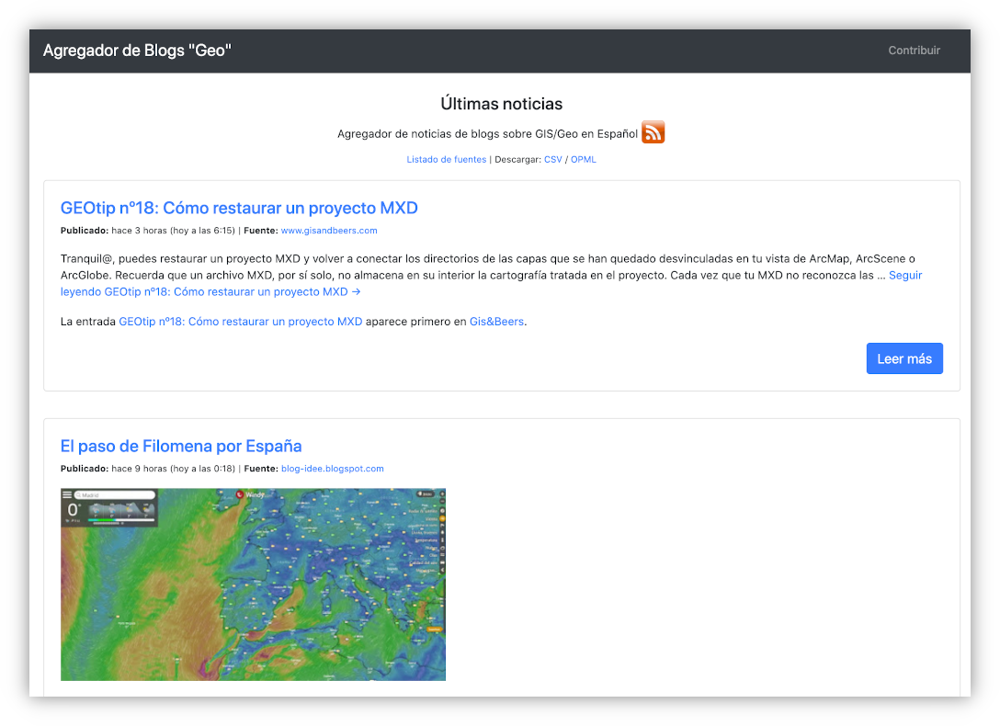
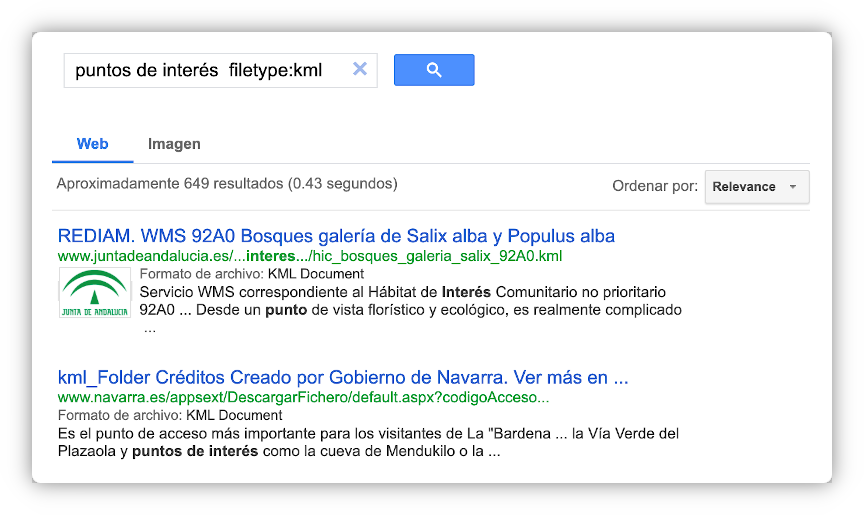
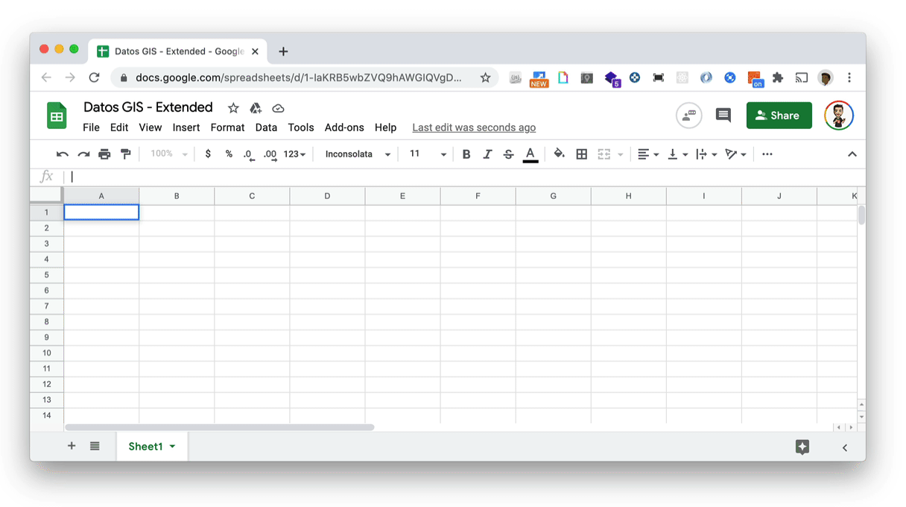
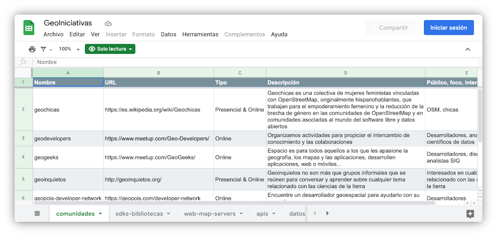
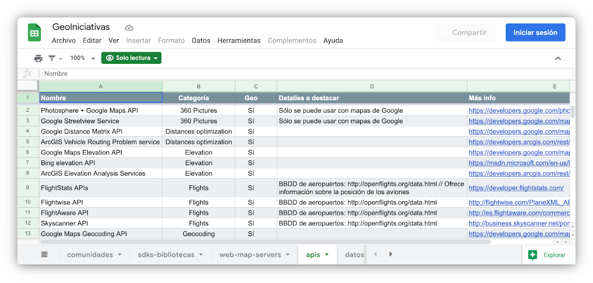

<!doctype html>
<html>
<head>
    <meta charset="utf-8">
    <meta name="description" content="">
    <meta name="viewport" content="width=device-width, initial-scale=1">
    <title>GeoIniciativas - Una recopilación de recursos para geoentusiastas</title>
    <link rel="stylesheet" href="https://cdnjs.cloudflare.com/ajax/libs/font-awesome/4.7.0/css/font-awesome.min.css">
    <link href="https://fonts.googleapis.com/css?family=Nunito+Sans:300,400,600,700,800,900" rel="stylesheet">
    <link rel="stylesheet" href="https://cdnjs.cloudflare.com/ajax/libs/highlight.js/9.12.0/styles/railscasts.min.css">
    <link rel="stylesheet" href="assets/css/scribbler-global.css">
    <link rel="author" href="humans.txt">

    <script src="https://cdn.jsdelivr.net/npm/vue@2"></script>
    <script src="https://unpkg.com/vue-router/dist/vue-router.js"></script>
    <!-- <script src="https://cdn.jsdelivr.net/npm/vue-scrollto"></script> -->
</head>
<body>

    <div id="app">
        <router-view></router-view>

        <footer class="footer">Esta página ha sido adaptada usando ue y con mucho ❤️ a partir de la plantilla gratuita "Scribbler" desarrollada por <a href="https://tympanus.net/codrops/" target="_blank" class="link link--light">Codrops</a>.</footer>
        <script src="https://cdnjs.cloudflare.com/ajax/libs/highlight.js/9.12.0/highlight.min.js"></script>
        <script>hljs.initHighlightingOnLoad();</script>
        <!--  -->
    </div>


    <script type="text/x-template" id="home">
        <div id="home-page">
            <nav>
                <div class="logo"></div>
                <ul class="menu">
                    <div class="menu__item toggle"><span></span></div>
                    <li class="menu__item"><i class="fa fa-book"></i> <router-link to="/docs" class="link link--dark">Documentación</router-link></li>
                    <li class="menu__item"><a href="https://github.com/Geo-Developers/geoiniciativas" class="link link--dark"><i class="fa fa-github"></i> Github</a></li>
                </ul>
            </nav>
            <div class="hero">
                <h1 class="hero__title">Geo<span class="logo__thin">iniciativas</span></h1>
                <p class="hero__description"> Comunidades, blogs, APIs, SDKs, datos, eventos, ... más que una <a href="https://github.com/sindresorhus/awesome/blob/main/awesome.md#the-awesome-manifesto">awesome list</a>.</p>
            </div>
            <div class="hero__terminal ">
                <div class="demoWrapper">
                    <div onclick="location.href='https://docs.google.com/spreadsheets/d/1bF4YYH7bXPSLI___zMfh3tDfSxDlWWZLkkuT5vD4zHQ/edit';" class="cursor-pointer">
                    <!-- <a href="https://docs.google.com/spreadsheets/d/1bF4YYH7bXPSLI___zMfh3tDfSxDlWWZLkkuT5vD4zHQ/edit"></a> -->
                    </div>
                </div>
            </div>
            <div class="wrapper">
                <p class="text-center">Si te parece interesante, ayúdanos dando <a href="https://github.com/Geo-Developers/geoiniciativas">una  en Github</a>.</p>
                <div class="feature">
                    <div class="feature__item">
                        <h3 class="section__title">Abierto</h3>
                        <p>El documento con los enlaces está licenciado bajo <a href="http://creativecommons.org/licenses/by/4.0/" class="bold">Creative Commons Attribution 4.0 International License</a> para que los datos sean compartidos y reutilizados.</p>
                    </div>
                    <div class="feature__item">
                        <h3 class="section__title">Colaborativo</h3>
                        <p>Somos un equipo abierto donde todos tenemos permiso para añadir y actualizar la información para poder tener y más actualizada lista de recursos posible, <a href="https://docs.google.com/spreadsheets/d/1bF4YYH7bXPSLI___zMfh3tDfSxDlWWZLkkuT5vD4zHQ/edit" class="bold">¡únete!</a>.</p>
                    </div>
                    <div class="feature__item">
                        <h3 class="section__title">Libre</h3>
                        <p>Nuestros scripts están licenciados bajo <a href="https://choosealicense.com/licenses/gpl-3.0/" class="bold">GPL v3.0</a>, para que tengas la libertad de hacer con ellos lo que quieras. La web depende de <a href="https://github.com/amiechen/codrops-scribbler">codrops-scribbler</a> que está bajo <a href="http://tympanus.net/codrops/licensing/">MIT</a>.</p>
                    </div>
                    <div class="feature__item">
                        <h3 class="section__title">Reutilizable</h3>
                        <p>Además de poder exportar los listados como CSV, XLSX, ODS, PDF, ... hemos creado un <a href="doc.html#widget" class="bold">widget</a> para que puedas puedas embeber los listados en cualquier web.</p>
                    </div>

                    <div class="feature__item">
                        <h3 class="section__title">Core</h3>
                        <p>El objetivo es poder <span class="bold">derivar proyectos</span> a partir de esta recopilación de enlaces, el widget es un ejemplo de ello. Descubre <a href="https://github.com/topics/geoiniciativas">otros proyectos en Github</a>.</p>
                    </div>

                    <div class="feature__item">
                        <h3 class="section__title">Actualizado</h3>
                        <p>Siempre es complicado mantener un listado de enlaces (porque tienden a romperse), por eso usaremos un <span class="bold">comprobador de enlaces rotos</span>.</p>
                        <!-- <p>Maintain all your settings in a single <span class="code code--inline">config.json</span> file. Never need to redo the setting every single time jotting down a note.</p> -->
                    </div>

                </div>

                <div class="callout">
                    <p>Descubre cómo embeber los listados, descargar los datos, contribuir y mucho más</p>
                    <router-link to="/docs" class="button--primary">Documentación</router-link>
                </div>
            </div>
            <div class="changelog">
                <div class="wrapper">
                    <h3 class="section__title">
                        Versiones<br>
                        <!-- Place this tag where you want the button to render. -->
                        <a class="github-button" href="https://github.com/Geo-Developers/geoiniciativas/subscription" data-icon="octicon-eye" aria-label="Watch Geo-Developers/geoiniciativas on GitHub">Watch</a>
                    </h3>

                    <div class="changelog__item">
                        <div class="changelog__meta">
                            <h4 class="changelog__title">v0.1</h4>
                            <small class="changelog__date">7/01/2021</small>
                        </div>
                        <div class="changelog__detail">
                            <ul>
                                <li>Documento con las primeras hojas 11 pestañas</li>
                                <li>MVP promotional site (home y docs)</li>
                            </ul>
                        </div>
                    </div>
                    <div class="changelog__callout">
                        <a href="https://github.com/Geo-Developers/geoiniciativas/issues" class="button--secondary inline-block"><span class="bold">Github issues</span>: Bugs, mejoras, ....</a>
                    </div>
                </div>
            </div>
        </div>
    </script>


    <script type="text/x-template" id="docs">
        <div id="docs-page">
            <div class="doc__bg"></div>
            <nav class="header">
                <h1 class="logo"><router-link to="/">Geo<span class="logo__thin">iniciativas</span></router-link></h1>
                <ul class="menu">
                    <div class="menu__item toggle"><span></span></div>
                    <li class="menu__item"><a href="" class="link link--dark"><i class="fa fa-github"></i> Github</a></li>
                    <li class="menu__item"><a href="index.html" class="link link--dark"><i class="fa fa-home"></i> Home</a></li>
                </ul>
            </nav>
            <div class="wrapper">
                <aside class="doc__nav">
                    <ul>
                        <li class="js-btn selected">Datos / Recursos</li>
                        <li class="js-btn">Proyectos derivados</li>
                        <li class="js-btn subcategory">&nbsp;- geoiniciativas-widget</li>
                        <li class="js-btn subcategory">&nbsp;- agregador-de-geoblogs</li>
                        <li class="js-btn subcategory">&nbsp;- open-data-search</li>
                        <li class="js-btn">Usuarios de GSheets</li>
                        <li class="js-btn">Desarrolladores</li>
                        <li class="js-btn subcategory">&nbsp;- Google Viz API</li>
                        <li class="js-btn subcategory">&nbsp;- Google Sheets API</li>
                        <li class="js-btn">Contribuciones</li>
                    </ul>
                </aside>
                <article class="doc__content">

                    <section class="js-section">
                        <h3 class="section__title" id="widget">Datos / Recursos</h3>
                        <!-- <a href="#" >Scroll</router-link> -->

                        <p>Para quedarte una copia local de los datos puedes <a href="https://support.google.com/docs/answer/49114?co=GENIE.Platform%3DDesktop&hl=es#zippy=%2Chacer-una-copia-de-un-archivo" class="link">hacer una copia</a> <a href="https://docs.google.com/spreadsheets/d/1bF4YYH7bXPSLI___zMfh3tDfSxDlWWZLkkuT5vD4zHQ/edit#gid=1019140788" class="link">del documento</a> o usar la opción de <a href="https://support.google.com/docs/answer/9330963?hl=es" class="link">exportar hojas de cálculo</a>.</p>

                        <p>Cada pestaña contiene un listado de recursos:</p>

                        <table id="customers">
                            <tr>
                                <th>Pestaña</th>
                                <th>Contenido</th>

                            </tr>
                            <tr>
                                <td>comunidades</td>
                                <td>Lugares donde poder interactuar con otr@s geoentusiastas</td>
                            </tr>
                            <tr>
                                <td>blogs</td>
                                <td>Medios que publican artículos periódicamente relacionados con las ciencias de la tierra, mapas, SIG, etc.</td>

                            </tr>
                            <tr>
                                <td>datos</td>
                                <td>Portales con datos geolocalizados</td>
                            </tr>
                            <tr>
                                <td>apis</td>
                                <td>APIs agnósticas (REST normalmente) que ofrecen datos georeferenciados y/o herramientas de análisis</td>
                            </tr>
                            <tr>
                                <td>sdks-bibliotecas</td>
                                <td>Frameworks, SDKs y bibliotecas tanto para trabajar con mapas y datos georeferenciasdos en entornos nativos y web</td>
                            </tr>
                            <tr>
                                <td>formatos</td>
                                <td>Formatos de datos para trabajar con datos georeferenciados</td>
                            </tr>
                            <tr>
                                <td>eventos</td>
                                <td>Eventos con foco en geoentusiastas</td>
                            </tr>
                            <tr>
                                <td>libros</td>
                                <td>Libros para desarrollar habilidades relacionadas con las ciencias de la tierra, mapas, SIG, etc.</td>
                            </tr>
                            <tr>
                                <td>canales-youtube</td>
                                <td>Canales de Youtube dirigidos a geoentusiastas</td>
                            </tr>
                            <tr>
                                <td>cursos-masters</td>
                                <td>Cursos online, presenciales, en vídeo, etc</td>
                            </tr>
                            <tr>
                                <td>otras-webs</td>
                                <td>Otros recursos que no encajar exáctamente en las categorías anteriores</td>
                            </tr>

                        </table>


                        <p>Las celdas de la primera fila pueden contener notas aclaratorias sobre cada campo, al igual que comentarios si se quiere discutir/debatir algo.</p>
                        <p>Se crearán nuevos listados conforme se vaya considerando necesario.</p>
                    </section>

                    <section class="js-section">
                        <h3 class="section__title">Proyectos derivados</a></h3>
                        <p>A partir de los datos se estos datos se están creando proyectos y scrips que pueden ser de interés general para geoentusiastas:</p>

                        <p>Estamos intentando que todos los proyectos que usen estos datos estén etiquetados en Github con el <a href="https://github.com/topics/geoiniciativas">"topic": geoiniciativa</a>. Si encuentras alguno que no esté listado aquí por favor avísanos abriendo un issue o haciendo un pull request.</p>
                        <p>Si quieres aportar alguna idea no dudes en leer la sección contribuciones.</p>
                    </section>

                    <section class="js-section">
                        <h4 class="bold">- geoiniciativas-widget</a></h4>
                        <p>Embebe los datos de cualquier pestaña de la hoja de cálculo en cualquier página web usando un script como este.</p>
                        <pre class="code dark code--block">
                            <code class="html">
                                {{widgetScript}}
                            </code>
                        </pre>
                        <p class="text-center">
                            <span class="bold">Demo</span>: <a href="https://geo-developers.github.io/geoiniciativas-widget/" class="link">live demo</a> |
                            <span class="bold">Documentación</span>: <a href="https://github.com/Geo-Developers/geoiniciativas-widget" class="link">github.com/Geo-Developers/geoiniciativas-widget</a>
                        </p>
                    <section>

                        <section class="js-section">
                        <h4 class="bold">- agregador-de-geoblogs</a></h4>
                        <p>
                            Con el objetivo facilitar la lectura de las últimas noticias sobre de los blogs sobre GEO en español
                            <span class="bold">se han reutilizado los datos de la <a href="https://docs.google.com/spreadsheets/d/1bF4YYH7bXPSLI___zMfh3tDfSxDlWWZLkkuT5vD4zHQ/edit#gid=75088066" class="link">pestaña "blogs"</a></span>
                            para crear un <a ref="https://es.wikipedia.org/wiki/RSS" class="link">RSS</a> unificado que contiene las últimas noticias
                            en un solo sitio. De este modo se ofrece la posibilidad de acceder a toda la geoactualidad desde un único sitio y como cada
                            uno prefiera vía: Una interfaz web, suscripción por email o lector de RSS que permita importar Fichero OPML.
                        </p>
                        <p class="text-center">
                            <a href="https://geo-developers.github.io/agregador-de-geoblogs/#/">
                                
                            </a>
                        </p>
                        <p class="text-center">
                            <span class="bold">Visor web</span>: <a href="https://geo-developers.github.io/agregador-de-geoblogs/#/" class="link">minimal interface</a> |
                            <span class="bold">Documentación</span>: <a href="https://github.com/Geo-Developers/agregador-de-geoblogs" class="link">github.com/Geo-Developers/agregador-de-geoblogs</a>
                        </p>
                    <section>

                    <section class="js-section">
                        <h4 class="bold">- open-data-search</a></h4>
                        <p>
                            <span class="bold">Usando los datos de <a href="https://docs.google.com/spreadsheets/d/1bF4YYH7bXPSLI___zMfh3tDfSxDlWWZLkkuT5vD4zHQ/edit#gid=746167425" class="link">la pestaña "datos"</a></span>
                            se está creando el mayor [meta]buscador de datos abiertos. Este buscador actualmente busca en +250 fuentes (portales de datos abiertos, de transparencia, IDEs, INE, catastro, INE, IGN, ...)
                        </p>
                        <p>
                            La implementación actual usa <a href="https://programmablesearchengine.google.com/about/" class="link">Programmable Search Engine de Google</a>
                            que permite fácilmente unificar fuentes y usar
                            los mismos <a href="https://github.com/esri-es/arcgis-search/blob/master/README.md#advanced-google-search-tips" class="link">parámetros avanzados de de búsqueda</a>
                            que el buscador de Google.
                        </p>
                        <p class="text-center">
                            
                        </p>
                        <p class="text-center">
                            <span class="bold">Demo</span>: <a href="https://cse.google.com/cse?cx=071ea5e1c8d03f71c" class="link">Programmable Search Engine</a> |
                            <span class="bold">Documentación</span>: <a href="https://github.com/esri-es/open-data-search" class="link">github.com/esri-es/open-data-search</a>
                        </p>

                    <section>

                    <section class="js-section">
                        <h3 class="section__title">Usuarios de GSheets</h3>

                        <p>
                            Una función bastante desconocida pero muy interesante de GSheets es <a href="https://support.google.com/docs/answer/3093340?hl=en" class="link">IMPORTRANGE</a>.
                            Esta permite importar un intervalo de celdas de una hoja de cálculo específica a otra. De este modo podemos crear nuevas hojas de cálculo que
                            mantengan siempre los datos actualizados importándolos de la hoja de datos original como se puede ver a continuación:
                        </p>
                        <p class="text-center">
                            <a href="https://docs.google.com/spreadsheets/d/1-IaKRB5wbZVQ9hAWGIQVgDWgNfT9pHpI_SFGjD3fyT0/edit?usp=sharing">
                                
                            </a>
                        </p>
                        <p class="text-center" style=" margin-top: 0; top: -20px; position: relative; ">
                            <a href="https://docs.google.com/spreadsheets/d/1-IaKRB5wbZVQ9hAWGIQVgDWgNfT9pHpI_SFGjD3fyT0/edit?usp=sharing" class="link">Abrir hoja de ejemplo</a>
                        </p>
                        <p>
                            Si no estás familiarizado con las <a href="https://support.google.com/docs/table/25273?hl=es&ref_topic=9199554" class="link">funciones de Google Sheets</a>
                            te recomendamos que les eches un vistazo, hay funciones como <a href="https://support.google.com/docs/answer/3093343" class="link">QUERY</a> que además permiten
                            filtrar los datos del rango importado usando consultas parecidas a SQL.
                        </p>
                    </section>

                    <section class="js-section">
                        <h3 class="section__title">Desarrolladores</h3>

                        <p>
                            El objetivo último de este proyecto es que los datos se usen lo máximo posible, por eso explicamos a continuación dos formatos
                            para consumirlos vía API.
                        </p>
                    </section>

                    <section class="js-section">
                        <h4 class="bold">Google Viz API</h4>
                        <p>
                            Usando la <a href="https://developers.google.com/chart/interactive/docs/querylanguage" class="link">Google Visualization API Query Language</a> podemos
                            lanzar consultas similares a como lo haríamos con SQL para recuperar todos o subconjuntos de datos filtrados.
                        </p>
                        <p>
                            Para ello sólo tendremos que usar la misma URL del spreadsheet pero terminada en <span class="code code--inline">/gviz/tq?tq=CONSULTA&gid=ID_HOJA</span>.
                        </p>
                        <p>
                            Por ejemplo, para extraer todas las filas de las columnas "Nombre" y "URL" (columnas A y B respectivamente) de la hoja "comunidades" (primera pestaña),
                            tendremos que usar la consulta: <span class="code code--inline">select A, B</span>.
                        </p>
                        <p class="text-center">
                            
                        </p>
                        <p>
                            <a href="https://developers.google.com/chart/interactive/docs/querylanguage#setting-the-query-in-the-data-source-url" class="link">Como se indica en la documentación</a>,
                            dicha consulta hay que codificarla (en UTF-8) antes de añadirla a la URL, por lo que quedaría:
                        </p>
                        <div class="code__block code__block--notabs">
                            <pre class="code code--block"><a href="https://docs.google.com/spreadsheets/d/1bF4YYH7bXPSLI___zMfh3tDfSxDlWWZLkkuT5vD4zHQ/gviz/tq?tq=select%20A%2C%20B" class="link"><a href="https://docs.google.com/spreadsheets/d/1bF4YYH7bXPSLI___zMfh3tDfSxDlWWZLkkuT5vD4zHQ/gviz/tq?tq=select%20A%2C%20B" class="link">
                                    https://docs.google.com/spreadsheets/d/1bF4YYH7bXPSLI___zMfh3tDfSxDlWWZLkkuT5vD4zHQ/gviz/tq?tq=<span class="bold">select%20A%2C%20B</span>
                                </a>
                            </pre>
                        </div>
                        <p>
                            Si por ejemplo quisiéramos recuperar sólo los nombres y URLs de todas las APIs de geocodificación de la
                            <a href="https://docs.google.com/spreadsheets/d/1bF4YYH7bXPSLI___zMfh3tDfSxDlWWZLkkuT5vD4zHQ/edit#gid=254964896" class="link">pestaña "apis"</a>
                            (id: 254964896):
                        </p>
                        <p class="text-center">
                            
                        </p>
                        <p>
                            Usaríamos la consulta: <span class="code code--inline">select A, E WHERE B = 'Geocoding'</span>, y querdaría:
                        </p>
                        <div class="code__block code__block--notabs">
                            <pre class="code code--block"><a href="https://docs.google.com/spreadsheets/d/1bF4YYH7bXPSLI___zMfh3tDfSxDlWWZLkkuT5vD4zHQ/gviz/tq?tq=select%20A%2C%20B" class="link">
                                    https://docs.google.com/spreadsheets/d/1bF4YYH7bXPSLI___zMfh3tDfSxDlWWZLkkuT5vD4zHQ/gviz/tq?tq=<span class="bold">select%20A%2C%20E%20WHERE%20B%20%3D%20'Geocoding'</span>&gid=<span class="bold">254964896</span>
                                </a>
                            </pre>
                        </div>
                        <p>
                            A continuación dejamos un script en JavaScript que puede ser utilizado para facilitar la codificación de las URLs:
                        </p>
                        <pre class="code dark code--block">
                            <code class="javascript">
                            const getDataVizURL = function(query, gid = null){
                                &nbsp;&nbsp; const baseUrl = 'https://docs.google.com/spreadsheets/d/',
                                &nbsp;&nbsp;&nbsp;&nbsp;&nbsp;&nbsp;&nbsp;&nbsp;   sheetID = '1bF4YYH7bXPSLI___zMfh3tDfSxDlWWZLkkuT5vD4zHQ',
                                &nbsp;&nbsp;&nbsp;&nbsp;&nbsp;&nbsp;&nbsp;&nbsp;   endpoint = '/gviz/tq?tq=',
                                &nbsp;&nbsp;&nbsp;&nbsp;&nbsp;&nbsp;&nbsp;&nbsp;    prefix = `${baseUrl}${sheetID}${endpoint}`;

                                &nbsp;&nbsp;return (gid)? `${prefix}${encodeURIComponent(query)}&gid=${gid}`: `${prefix}${encodeURIComponent(query)}`;
                            }
                            // Ejemplo de uso: getDataVizURL("select A, E WHERE B = 'Geocoding'",'144636878')
                            // Devolvería: https://docs.google.com/spreadsheets/d/1bF4YYH7bXPSLI___zMfh3tDfSxDlWWZLkkuT5vD4zHQ/gviz/tq?tq=select%20A%2C%20E%20WHERE%20B%20%3D%20'Geocoding'&gid=144636878
                            </code>
                        </pre>
                    </section>

                    <section class="js-section">
                        <h4 class="bold">Google Sheets API</h4>
                        <p>
                            La <a href="https://developers.google.com/sheets/api/guides/migration" class="link">API de Google Sheets</a>
                            también permite recuperar todos los datos de cada pestaña individualmente tanto en formato JSON como XML.
                        </p>

                        <p>En los siguientes ejemplos usaremos la versión 3 para evitar tener que generar una API_KEY de Google Console.</p>

                        <table id="customers">
                            <tr>
                                <th>Endpoint (v3)</th>
                                <th>Funcionalidad</th>
                                <th>Demo</th>
                            </tr>
                            <tr>
                                <td>/feeds/worksheets/<span class="bold">spreadsheetId</span>/private/full</td>
                                <td>Los metadatos del documento: título, número de pestañas, identificadores globales de las pestañas, etc.</td>
                                <td><a href="https://spreadsheets.google.com/feeds/worksheets/1bF4YYH7bXPSLI___zMfh3tDfSxDlWWZLkkuT5vD4zHQ/public/full?alt=json" class="link">JSON</a></td>
                            </tr>
                            <tr>
                                <td>/feeds/list/<span class="bold">spreadsheetId</span>/<span class="bold">tabId</span>/public/values</td>
                                <td>Permite recuperar los valores de las celdas de una pestaña concreta. El valor "spreadsheetId"</td>
                                <td><a href="https://spreadsheets.google.com/feeds/list/1bF4YYH7bXPSLI___zMfh3tDfSxDlWWZLkkuT5vD4zHQ/1/public/values?alt=json" class="link">JSON</a></td>
                            </tr>
                        </table>

                        <p>Nota: el proyecto <a href="https://github.com/Geo-Developers/geoiniciativas-widget">geoiniciativas-widget</a> se ha desarrollado usando esta API.</p>
                    </section>

                    <section class="js-section">
                        <h3 class="section__title">Contribuciones</h3>
                        <p>
                            Para organizar las ideas, bugs, etc. usamos los <a href="https://github.com/Geo-Developers/geoiniciativas/issues">issues del proyecto</a>,
                            y si lo que prefieres es tener un encuentro online con otros geoentusiastas con los que poder hablar, preguntar dudas, ... también puedes
                            conectar al <a href="https://github.com/Geo-Developers/organization/blob/master/coworking.md#preguntas-frecuentes-acerca-del-coworking" class="bold">coworking online</a>.
                        </p>

                        <p class="section__subtitle bold">AÑADIR O MANTENER ENLACES</p>
                        <p>Cuántos más seamos añadiendo y manteniendo estos datos más útil será, por lo que si quieres ayudar sólo tienes que abrir un issue y ponerte en contacto con nosotros</p>

                        <p class="section__subtitle bold">DESARROLLADORES</p>

                        <p>Una buena forma de contribuir es ayudando con <a href="https://github.com/Geo-Developers/geoiniciativas/issues">los issues</a>, ¿te animas?:</p>
                        <div class="code__block code__block--notabs">
                            <pre class="code dark code--block">
                                <code>
                                    $ git clone https://github.com/Geo-Developers/geoiniciativas.git
                                </code>
                            </pre>
                        </div>

                        <!-- <div class="hero__terminal">
                            <pre>
                                <code class="shell-session demo">geolover ~ $ </code>
                            </pre>
                        </div> -->
                    </section>

                    <!-- <section class="js-section">
                        <div class="installation">
                            <h3 class="section__title">Installation</h3>
                            <div class="tab__container">
                                <ul class="tab__menu">
                                    <li class="tab active" data-tab="mac">mac</li>
                                    <li class="tab" data-tab="linux">linux</li>
                                    <li class="tab" data-tab="win">win</li>
                                </ul>
                                <pre class="nohighlight code">
                                    <code class="tab__pane active mac">$  brew install scribbler</code>
                                    <code class="tab__pane linux">$  apt-get install scribbler</code>
                                    <code class="tab__pane win">$  gem install scribbler</code>
                                </pre>
                            </div>
                        </div>
                    </section> -->

                </article>
            </div>
        </div>
    </script>

    <!-- Place this tag in your head or just before your close body tag. -->
    <script async defer src="https://buttons.github.io/buttons.js"></script>
        <script>

            const Home = Vue.component('home',{
                template: '#home',
                mounted() {
                    let externalScript = document.createElement('script')
                    externalScript.setAttribute('src', 'assets/js/scribbler.js')
                    document.getElementById("home-page").appendChild(externalScript)

                    externalScript = document.createElement('link')
                    externalScript.setAttribute('rel', 'stylesheet');
                    externalScript.setAttribute('href', 'assets/css/scribbler-landing.css')
                    document.getElementById("home-page").appendChild(externalScript)


                }
            });

            const DocsPage = Vue.component('docs',{
                template: '#docs',
                mounted() {
                    let externalScript = document.createElement('script')
                    externalScript.setAttribute('src', 'assets/js/scribbler.js')
                    document.getElementById("docs-page").appendChild(externalScript)

                    externalScript = document.createElement('link')
                    externalScript.setAttribute('rel', 'stylesheet');
                    externalScript.setAttribute('href', 'assets/css/scribbler-doc.css')
                    document.getElementById("docs-page").appendChild(externalScript)

                    // From testing, without a brief timeout, it won't work.
                    // setTimeout(() => this.scrollFix(this.$route.hash), 1);
                },
                data(){

                    const str = `
                    <div class="geoiniciativas-widget" data-sheetid="1bF4YYH7bXPSLI___zMfh3tDfSxDlWWZLkkuT5vD4zHQ" data-tab="sdks-bibliotecas"></div>

                    \<script\>
  (function() {
    const  repoUrl = "https://geo-developers.github.io/geoiniciativas-widget",
           js = document.createElement("script");
           css = document.createElement("link");

    js.type = "text/javascript";
    js.src = repoUrl + "/geoiniciativas-widget.js";

    css.rel = "stylesheet"
    css.href = repoUrl + "/geoiniciativas-widget.css",

    document.querySelector("head").appendChild(js);
    document.querySelector("head").appendChild(css);
  })();
  \</script\>;`;

                    return {
                        widgetScript: str
                    }

                },
                methods: {
                    // scrollFix: function(hashbang)
                    // {
                    // location.hash = hashbang;
                    // }

                }

            });

            // const DocsPage = Vue.component('doc-page',{
                //     template: '#doc-page'
                // });

                const routes = [
                { path: '/docs', component: DocsPage },
                // { path: '/noticias', component: ArticleList },
                { path: '/', component: Home }
                ];
                const router = new VueRouter({
                    routes,
                    scrollBehavior(to, from, savedPosition) {
                        if (to.hash) {
                            VueScrollTo.scrollTo(to.hash, 700);
                            return { selector: to.hash }
                        } else if (savedPosition) {
                            return savedPosition;
                        } else {
                            return { x: 0, y: 0 }
                        }
                    }
                })

                var app = new Vue({
                    el: '#app',
                    router
                });

            </script>
        </body>
        </html>
